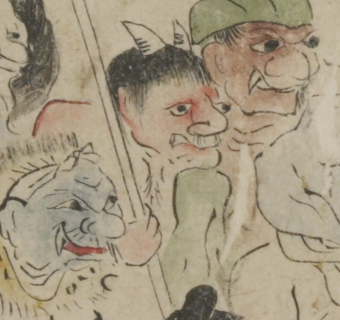

赤い肌の鬼。ざんばら髪で、頭頂に大きな角が2本生えている。目玉と鼻が大きく、鼻毛を生やしている。右手で、棒状のものを持っている。
著作者：坂本弥一郎徳定／出典：親書誌：U426_nichibunken_0080：伊吹山酒呑童子絵巻；イブキヤマシュテンドウジエマキ／日付：2007／資源識別子：U426_nichibunken_0080_0001_0007
Copyright (c)2010- International Research Center for Japanese Studies, Kyoto, Japan. All rights reserved.